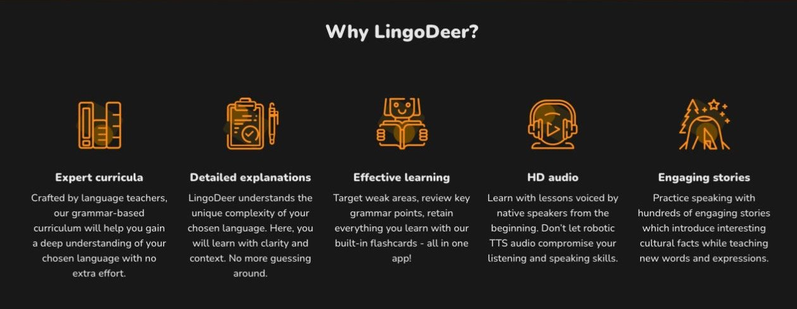

Start by considering TEUIDA if your main difficulty is getting yourself to speak Korean aloud. Start by considering LingoDeer if you want a course that explains how Korean sentences fit together. Before paying, try the activity you expect to repeat most often—not just the one that makes the best first impression.
That recommendation follows their stated teaching approaches. It does not mean TEUIDA teaches no grammar, or that LingoDeer offers no speaking practice. Their emphasis is the more useful starting point for comparison.
This guide uses official product descriptions and linked learner discussions checked on October 22, 2026. We have not completed either Korean course or independently measured their pronunciation feedback.
TEUIDA vs LingoDeer at a glance
| What you need next | Start by considering | What to check in a sample |
|---|---|---|
| A reason to answer aloud | TEUIDA | Whether its conversation scenarios make you produce an answer. |
| Clear explanations of sentence patterns | LingoDeer | Whether you can explain and reuse the pattern after a lesson. |
| Feedback while practising pronunciation | TEUIDA | Whether the feedback tells you what to change. |
| A grammar-based learning sequence | LingoDeer | Whether the lesson order and explanations suit your pace. |
| A sustainable daily routine | Either | Whether you can repeat the activity in your real study environment. |
The best choice depends partly on what is already in your routine. An app can be useful as a supplement even when it would not be your preferred main course.
What TEUIDA emphasizes
TEUIDA's official site emphasizes speaking from the beginning, real-life conversation scenarios, interactive lessons, and pronunciation feedback. Its homepage describes AI pronunciation analysis.
For a beginner who understands a phrase but hesitates to say it, a scenario can provide a concrete prompt: someone expects an answer, and your task is to respond aloud.
The key question is what that prompt gets you to do. Do you construct an answer, repeat a model, or rely on a hint? All can be useful activities, but they are different demands. During a sample, notice which one you are practising.
Also consider where you will use it. A speaking activity may fit a quiet room much better than a commute where you cannot comfortably talk into your phone. The strongest lesson is not useful if your usual study setting makes you skip it.
What LingoDeer emphasizes
LingoDeer's official site describes a grammar-based curriculum, detailed explanations, review activities, native-speaker audio, and stories with speaking practice.

That makes it worth investigating if you dislike guessing your way through exercises. A learner may need to know why a particle or ending appears before practising it in several sentences.
An explanation is only the beginning, though. After reading one, check whether you can do something with it. Can you recognize the pattern in a new sentence? Can you change a simple detail without copying the example?
The homepage describes the broader product. It does not establish that every language course contains identical material or reaches the same depth. Evaluate the Korean course specifically rather than relying on a recommendation written about a different language.
What Korean learners say about TEUIDA
A December 2023 discussion in r/Korean asked which app was worth a beginner's time and money. The replies are useful because they focus on particular experiences rather than a simple winner.
One learner described TEUIDA as helping them study consistently after previous attempts at Korean had stalled. That is a reason to investigate whether its format helps you start speaking and return the next day.
Another learner liked the course but wanted more content. Their comment concerns the course available at the time. It is a prompt to check today's curriculum, not evidence that the current app ends at the same point.
The thread also contains conflicting experiences of speech recognition. Some found answers difficult to register; others felt it worked well or described changing their pronunciation. These accounts cannot establish the system's accuracy. They do show why a trial should include the sounds and sentences you find difficult.
What those comments do—and do not—tell us about LingoDeer
The Korean thread contains users with different levels of experience in each app. Some explicitly say they have used only one. Their comments should not be treated as a matched comparison of both complete courses.
It also mentions LingoDeer Plus, which a commenter describes as a practice app. Do not assume a recommendation for Plus is a review of the main LingoDeer course, or that purchasing one automatically answers questions about the other. Check the current product and plan details.
A separate Japanese-learning comment praises LingoDeer's more explicit explanations and describes later moving to Genki. That is an illustration of what someone valued in the teaching style. It is not evidence that the Korean course delivers the same outcome.
For Korean, use these accounts to decide what to inspect yourself: explanation, practice, pacing, and the next step after a lesson.
How to compare them around one small task
Use a beginner task you care about, such as introducing yourself or answering a simple everyday question. Find relevant sample material in each app, where available.
Then compare the experience rather than the score:
- Notice whether you understand the meaning and sentence structure.
- Answer before looking at the model when the activity allows it.
- Check what happens after an incorrect or unclear answer.
- Return later and see whether you can produce something without the same prompts.
This is a suggested selection exercise, not a test we have performed. Its purpose is to expose the gap between enjoying a lesson and knowing what to do next.
You may discover that you like one app's explanation but prefer the other's speaking prompts. That does not mean you need two subscriptions immediately. First check whether an existing resource already covers one of those jobs.
Treat pronunciation scores as feedback to investigate
An accepted answer can feel encouraging. A rejected one can feel personal. Neither response, by itself, tells you how well a person would understand you in a conversation.
When trying TEUIDA, look for useful information: does it help you notice a particular sound or phrase? Can you understand what to change? Does trying again become clearer, or do you find yourself chasing acceptance without knowing why?
If the result seems inconsistent, try again in a quiet setting and compare with the model audio. For a sound that remains confusing, an explanation or feedback from a qualified teacher may answer a question that an app score cannot.
There is no need to infer a diagnosis from a Reddit comment or a single recording.
Before paying, check the current course and plan
Open the current curriculum and access information for your device and region. Look at the activities you want, how far the course extends, what a trial includes, and what happens when it ends.
Check renewal, cancellation, and any refund terms before committing. This article does not repeat old discount amounts or assume that a historical lifetime offer is still available.
Also ask what you will use after the app. If you need more explicit study, How to Study Korean is a resource to investigate. For another form of reading practice, explore StoryKorean. Our Korean YouTube guide offers additional directions for finding explanations and listening material.
Choose a supplement only when you can name the job it will do.
Questions beginners ask
Is TEUIDA or LingoDeer better for a complete beginner?
TEUIDA is worth trying when you need structured prompts to speak. LingoDeer is worth trying when understanding grammar is your immediate need. Your study setting and response to the lesson format matter as much as the feature list.
Should I buy both?
Start with one clear gap. If you already have a grammar course, you may want speaking practice. If you have listening and speaking material but cannot understand the sentence patterns, explanations may be more useful. You can reconsider after establishing a routine.
Does a high pronunciation score mean I can speak Korean well?
It shows how an app evaluated a particular attempt. It does not establish your ability to understand an unfamiliar question, choose an appropriate response, or maintain a conversation.
How should I make the final choice?
Repeat a small activity on more than one day. Keep the option that helps you understand what you are practising, gives you a useful next step, and fits a routine you can maintain.
Sources
- TEUIDA official homepage: stated teaching emphasis, checked October 22, 2026.
- LingoDeer official homepage: stated curriculum and practice features, checked October 22, 2026.
- Reddit: TEUIDA and LingoDeer for Korean: December 2023 thread and selected later replies.
- Reddit: LingoDeer experience in Japanese study: April 2024, used only as a teaching-style example from another language.